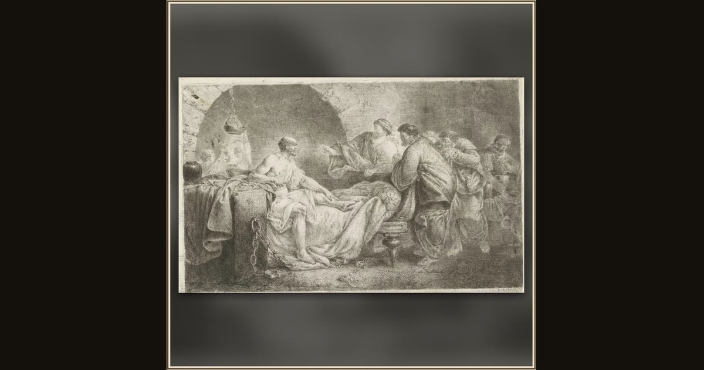

Socrates neemt afscheid van zijn vrienden in de gevangenis
Bernhard Rode · 1780 · rijksmuseum
Socrates sits on a couch beside a chain while his friends gather in the prison; after the fetters are removed, he rubs his leg and speaks of pleasure and pain. (60b) Explore its place in Plato's Dialogues, Phaedo, section 14.